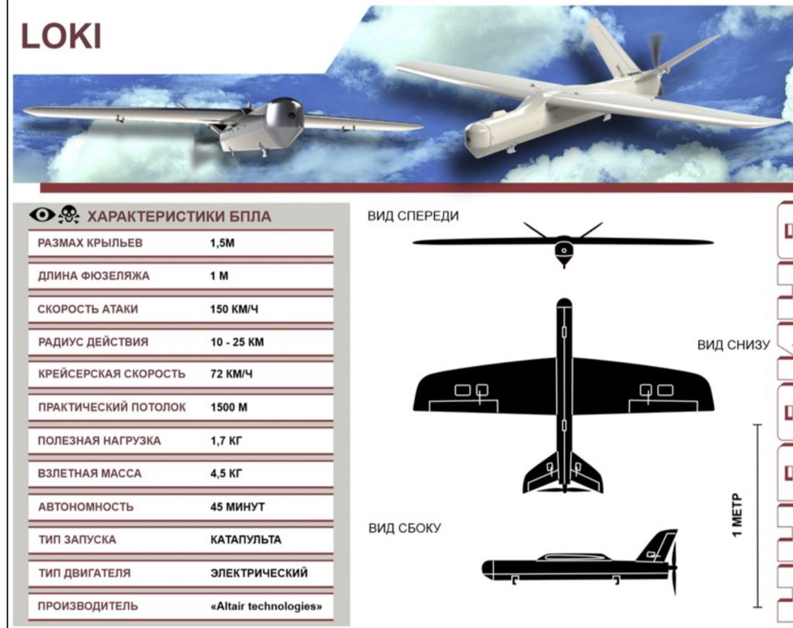
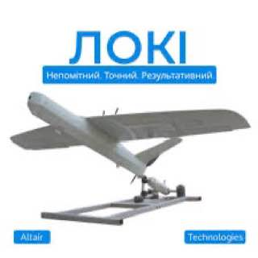
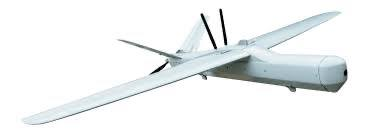

Скачай
оффлайн-версию
работает без интернета.
WARMATE 3.0
WARMATE 2.0
RAM-2
RAM-2S
RAM
LOKI
БПЛА Оса, либо Королева шершней
HF-1
Не идентифицирован
SWITCH BLADE 600
ОГЛАВЛЕНИЕ
пакистано-турецкий ударный, одноразовый бпла "Y-III" или "Yiha-III".
Список сформирован из темы
БПЛА ВСУ барражирующие боеприпасы
Источник темы
ТЭЧ БпЛА | FPV
LOKI
Из темы
БПЛА ВСУ барражирующие боеприпасы
Из источника
ТЭЧ БпЛА | FPV
LOKI

LOKI

Веб-страница создана автоматически на основе
поста
пользователя
ТЭЧ БпЛА | FPV